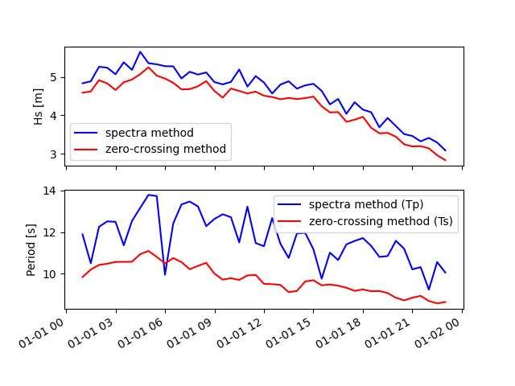

Note
Click here to download the full example code
Sea level to wave examples¶
Out:
==>spectra:0/80147
/home/remy/.local/lib/python3.8/site-packages/toto-1.0.0-py3.8.egg/toto/core/wavestats.py:100: RankWarning: Polyfit may be poorly conditioned
stats['sea']=get_stats(S_sea,freq_sea)
fmax smax Xmom0 Xmom1 Xmom2 Xmom3 Xmom4 Hs Tm01 ... Hs_sea Tm01_sea Tm02_sea Fmn_sea Tcr_sea T2_sea QP_sea SWe_sea SW_sea
time ...
1970-01-01 01:00:00 0.084124 108.112954 1.459278 0.173504 0.023545 0.003740 0.000696 4.832023 8.410633 ... 2.638657 5.758705 5.571736 0.173650 4.829568 0.764750 2.833306 0.498660 0.261227
1970-01-01 01:30:00 0.095281 129.430599 1.490063 0.177020 0.024085 0.003853 0.000726 4.882725 8.417496 ... 2.589554 5.661561 5.474343 0.176630 4.737216 0.750123 2.794854 0.501170 0.263757
1970-01-01 02:00:00 0.081618 213.668926 1.729353 0.189028 0.023786 0.003575 0.000646 5.260194 9.148656 ... 2.490049 5.746980 5.557113 0.174004 4.801285 0.749025 3.472318 0.503510 0.263629
1970-01-01 02:30:00 0.079917 237.655434 1.713355 0.186391 0.023302 0.003473 0.000623 5.235807 9.192273 ... 2.529186 5.915962 5.704459 0.169034 4.858309 0.740866 3.363794 0.524081 0.274824
1970-01-01 03:00:00 0.080048 128.904954 1.604566 0.179941 0.023511 0.003663 0.000677 5.066858 8.917160 ... 2.689567 5.849011 5.660198 0.170969 4.883569 0.807913 3.244913 0.505561 0.260439
1970-01-01 03:30:00 0.088029 274.617934 1.806338 0.200437 0.026033 0.004062 0.000756 5.376003 9.011989 ... 2.758004 5.742327 5.558907 0.174145 4.818386 0.746704 3.253345 0.498679 0.258998
1970-01-01 04:00:00 0.079790 141.635171 1.676887 0.187637 0.024675 0.003906 0.000738 5.179786 8.936869 ... 2.679605 5.729285 5.533292 0.174542 4.761007 0.727060 2.948176 0.509570 0.268507
1970-01-01 04:30:00 0.075949 256.221951 1.995247 0.215020 0.027118 0.004128 0.000758 5.650128 9.279354 ... 2.755853 5.826340 5.621729 0.171634 4.811595 0.992348 2.996045 0.517154 0.272246
1970-01-01 05:00:00 0.072534 179.975012 1.790198 0.193979 0.024804 0.003837 0.000712 5.351931 9.228805 ... 2.681510 5.761065 5.578024 0.173579 4.822698 0.859521 3.122832 0.502480 0.258276
1970-01-01 05:30:00 0.072819 206.911051 1.772267 0.191669 0.024543 0.003804 0.000705 5.325061 9.246494 ... 2.631488 5.688619 5.514818 0.175790 4.813818 0.750263 2.820174 0.487921 0.253030
1970-01-01 06:00:00 0.100554 185.173050 1.739415 0.193124 0.024864 0.003810 0.000694 5.275475 9.006713 ... 2.576994 5.740384 5.549593 0.174204 4.804715 0.722060 2.813461 0.500429 0.264463
1970-01-01 06:30:00 0.080550 130.475582 1.736802 0.191329 0.024847 0.003904 0.000735 5.271511 9.077570 ... 2.600721 5.614006 5.436916 0.178126 4.725395 0.898350 3.261585 0.494581 0.257303
1970-01-01 07:00:00 0.075033 160.971815 1.536143 0.175617 0.023308 0.003657 0.000676 4.957649 8.747124 ... 2.806739 5.974313 5.780947 0.167383 4.967966 0.839561 3.759844 0.511356 0.260800
1970-01-01 07:30:00 0.074256 128.243460 1.645513 0.184415 0.023873 0.003677 0.000675 5.131101 8.922866 ... 2.528236 5.738583 5.541566 0.174259 4.777661 0.000667 2.774576 0.506653 0.269015
1970-01-01 08:00:00 0.075568 149.212891 1.599047 0.182077 0.024081 0.003787 0.000706 5.058138 8.782271 ... 2.767856 5.925446 5.716181 0.168764 4.873493 0.765460 3.365968 0.522599 0.273054
1970-01-01 08:30:00 0.081416 140.323663 1.634420 0.181276 0.023278 0.003568 0.000655 5.113777 9.016203 ... 2.606040 5.866011 5.665914 0.170474 4.849246 0.747787 3.114026 0.517203 0.268103
1970-01-01 09:00:00 0.079170 110.782197 1.478357 0.175350 0.023786 0.003762 0.000693 4.863508 8.430913 ... 2.614887 5.728445 5.552835 0.174567 4.850457 0.723377 2.978658 0.486806 0.253477
1970-01-01 09:30:00 0.077787 122.276351 1.442070 0.171310 0.023432 0.003768 0.000711 4.803449 8.417907 ... 2.756663 5.873151 5.673355 0.170266 4.857996 0.772958 3.021463 0.516508 0.267719
1970-01-01 10:00:00 0.078657 131.637928 1.481266 0.174191 0.023690 0.003805 0.000718 4.868292 8.503685 ... 2.656991 5.729258 5.538419 0.174543 4.789933 0.762622 2.606315 0.502021 0.264767
1970-01-01 10:30:00 0.086963 137.013812 1.683677 0.199669 0.027119 0.004305 0.000798 5.190263 8.432333 ... 2.910873 5.834460 5.648643 0.171395 4.892733 0.782789 3.133071 0.499735 0.258600
1970-01-01 11:00:00 0.075623 90.376293 1.407972 0.170468 0.023800 0.003899 0.000745 4.746320 8.259463 ... 2.714577 5.706828 5.522929 0.175229 4.792378 0.798983 3.110189 0.497046 0.260199
1970-01-01 11:30:00 0.087175 141.274016 1.574127 0.188693 0.025892 0.004146 0.000773 5.018569 8.342252 ... 2.872042 5.817964 5.635972 0.171881 4.896555 0.754386 3.052136 0.495156 0.256173
1970-01-01 12:00:00 0.088362 113.801427 1.471703 0.181494 0.025579 0.004186 0.000794 4.852550 8.108835 ... 2.927494 5.841673 5.654963 0.171184 4.882603 0.832584 3.050440 0.504487 0.259083
1970-01-01 12:30:00 0.078931 103.954315 1.303119 0.158169 0.022108 0.003627 0.000695 4.566170 8.238797 ... 2.700809 5.839886 5.633932 0.171236 4.823304 0.737483 4.484203 0.516782 0.272852
1970-01-01 13:00:00 0.087457 171.328679 1.439188 0.174998 0.024368 0.003955 0.000747 4.798646 8.224048 ... 2.949282 5.962635 5.765415 0.167711 4.945175 0.775001 3.506114 0.514099 0.263790
1970-01-01 13:30:00 0.093035 132.970451 1.490697 0.184783 0.026057 0.004270 0.000813 4.883764 8.067266 ... 2.807408 5.696106 5.512963 0.175559 4.779143 0.742291 2.828657 0.498496 0.259893
1970-01-01 14:00:00 0.083805 174.614556 1.377412 0.172023 0.024569 0.004078 0.000783 4.694527 8.007155 ... 2.832961 5.760463 5.571295 0.173597 4.818293 0.773016 3.074925 0.502043 0.262795
1970-01-01 14:30:00 0.083599 130.574979 1.426702 0.173484 0.024151 0.003933 0.000748 4.777786 8.223812 ... 2.743386 5.759247 5.567309 0.173634 4.805835 0.773841 3.547632 0.504821 0.264840
1970-01-01 15:00:00 0.089530 95.349124 1.451405 0.180736 0.025573 0.004185 0.000792 4.818971 8.030513 ... 2.979233 5.888683 5.699727 0.169817 4.920173 0.797027 3.181900 0.504811 0.259620
1970-01-01 15:30:00 0.102500 93.204991 1.343962 0.165028 0.023147 0.003785 0.000721 4.637175 8.143852 ... 2.763892 5.831022 5.634659 0.171497 4.848306 0.730589 3.311855 0.509546 0.266295
1970-01-01 16:00:00 0.090840 111.822517 1.147740 0.144484 0.020640 0.003411 0.000652 4.285306 7.943695 ... 2.649672 5.849992 5.656070 0.170940 4.862536 0.735263 3.022121 0.510796 0.264096
1970-01-01 16:30:00 0.093879 134.587704 1.224149 0.150611 0.020872 0.003335 0.000618 4.425651 8.127898 ... 2.674725 6.000962 5.797489 0.166640 4.964036 0.753589 3.270792 0.516580 0.267255
1970-01-01 17:00:00 0.087667 63.734804 1.020301 0.128264 0.018347 0.003046 0.000587 4.040398 7.954665 ... 2.429250 5.751287 5.562780 0.173874 4.793943 0.802125 3.236761 0.507267 0.262531
1970-01-01 17:30:00 0.086421 133.667371 1.177786 0.147802 0.021160 0.003527 0.000683 4.341034 7.968668 ... 2.680263 5.864166 5.649003 0.170527 4.806860 0.768511 2.937591 0.525292 0.278619
1970-01-01 18:00:00 0.085406 96.291418 1.075633 0.136822 0.019954 0.003385 0.000663 4.148510 7.861561 ... 2.553720 5.674453 5.491435 0.176228 4.759339 0.797586 2.839047 0.498857 0.260320
1970-01-01 18:30:00 0.088222 89.893767 1.041231 0.130998 0.018880 0.003172 0.000618 4.081629 7.948431 ... 2.477211 5.697952 5.512151 0.175502 4.769613 0.821181 3.291061 0.501270 0.261823
1970-01-01 19:00:00 0.092571 87.951599 0.851136 0.111141 0.016543 0.002844 0.000561 3.690280 7.658134 ... 2.410574 5.758365 5.562807 0.173660 4.795142 0.791293 3.159715 0.506908 0.267479
1970-01-01 19:30:00 0.092222 95.340702 0.966727 0.126590 0.018890 0.003251 0.000641 3.932891 7.636654 ... 2.632223 5.789039 5.601873 0.172740 4.836470 0.828142 2.921098 0.504577 0.260651
1970-01-01 20:00:00 0.086373 86.194715 0.866316 0.114354 0.017077 0.002913 0.000565 3.723044 7.575716 ... 2.462002 5.730196 5.565297 0.174514 4.880495 0.824624 3.020433 0.480579 0.245229
1970-01-01 20:30:00 0.089303 48.962933 0.772176 0.104395 0.016142 0.002874 0.000582 3.514942 7.396684 ... 2.289871 5.472731 5.309494 0.182724 4.665117 0.924005 2.651148 0.477491 0.249868
1970-01-01 21:00:00 0.098030 54.763442 0.750467 0.097825 0.014590 0.002528 0.000505 3.465179 7.671491 ... 2.160676 5.594554 5.406993 0.178745 4.676491 0.843707 2.706960 0.501950 0.265670
1970-01-01 21:30:00 0.096978 83.728796 0.691586 0.093240 0.014395 0.002569 0.000524 3.326465 7.417295 ... 2.197245 5.557079 5.371498 0.179951 4.656120 0.700845 2.474303 0.498622 0.265127
1970-01-01 22:00:00 0.108367 74.951203 0.729117 0.096435 0.014586 0.002562 0.000518 3.415534 7.560678 ... 2.150844 5.553609 5.360865 0.180063 4.630476 0.709475 2.548383 0.503911 0.270555
1970-01-01 22:30:00 0.094745 84.917601 0.679290 0.090671 0.013796 0.002424 0.000488 3.296762 7.491825 ... 2.095330 5.551176 5.363133 0.180142 4.653750 0.709253 2.659266 0.497036 0.267121
1970-01-01 23:00:00 0.099512 55.510728 0.597423 0.079168 0.011922 0.002073 0.000414 3.091725 7.546302 ... 1.985679 5.651365 5.456059 0.176948 4.701044 0.852438 3.152668 0.507556 0.269951
[45 rows x 48 columns]
Warning in dyadlength: n != 2^J
==>zero-crossing:0/80147
hs ts hmax tmax h10 t10
time
1970-01-01 01:00:00 4.586673 9.833614 7.359892 10.297872 5.626617 9.992442
1970-01-01 01:30:00 4.621101 10.190343 9.591177 11.248390 5.642156 10.262888
1970-01-01 02:00:00 4.913810 10.416753 9.591177 11.248420 6.006981 10.290888
1970-01-01 02:30:00 4.829182 10.474904 8.717578 10.150800 6.047880 10.481365
1970-01-01 03:00:00 4.656550 10.560534 7.893176 10.850867 5.838262 10.559496
1970-01-01 03:30:00 4.856798 10.564633 10.906938 12.448062 6.178883 10.539458
1970-01-01 04:00:00 4.929726 10.571249 10.906938 12.448283 6.332225 10.775446
1970-01-01 04:30:00 5.069836 10.934066 8.261767 12.431717 6.292397 10.809728
1970-01-01 05:00:00 5.246721 11.088469 8.261767 12.431254 6.327902 11.348781
1970-01-01 05:30:00 5.031747 10.802015 9.856964 9.169152 6.119598 11.520011
1970-01-01 06:00:00 4.955496 10.490313 9.856964 9.169111 6.124165 10.578908
1970-01-01 06:30:00 4.846380 10.745966 9.522340 9.690985 6.001564 10.820509
1970-01-01 07:00:00 4.674120 10.554071 8.089956 11.488029 5.724588 10.455038
1970-01-01 07:30:00 4.680945 10.209789 8.784317 10.689411 5.884477 10.181934
1970-01-01 08:00:00 4.754490 10.369338 8.784317 10.689441 6.005756 10.702113
1970-01-01 08:30:00 4.888724 10.518886 7.348492 8.860895 5.927997 10.087999
1970-01-01 09:00:00 4.632016 9.999174 7.377664 8.160618 5.634597 10.024662
1970-01-01 09:30:00 4.459835 9.710059 7.377664 8.160728 5.526276 10.066308
1970-01-01 10:00:00 4.695068 9.775940 8.278475 11.190082 5.860637 9.985088
1970-01-01 10:30:00 4.634227 9.695539 8.278475 11.190022 5.756841 9.894493
1970-01-01 11:00:00 4.568014 9.909535 7.693836 9.633271 5.587124 10.149307
1970-01-01 11:30:00 4.615147 9.936556 7.473726 10.674354 5.705834 9.930979
1970-01-01 12:00:00 4.509512 9.507009 7.473726 10.671658 5.568957 9.412697
1970-01-01 12:30:00 4.476072 9.488458 8.292375 9.352585 5.536945 9.372294
1970-01-01 13:00:00 4.417938 9.454258 7.671270 9.244518 5.518103 9.353374
1970-01-01 13:30:00 4.451351 9.106042 7.740187 9.862248 5.610530 9.024578
1970-01-01 14:00:00 4.422352 9.162219 7.740187 9.861856 5.449894 9.079745
1970-01-01 14:30:00 4.446891 9.619116 8.084905 8.582673 5.421720 9.562036
1970-01-01 15:00:00 4.486946 9.681242 8.084905 8.582754 5.569903 9.530997
1970-01-01 15:30:00 4.237710 9.433008 7.809744 8.793676 5.289703 9.379920
1970-01-01 16:00:00 4.076684 9.474625 7.191332 9.238423 5.080690 9.303652
1970-01-01 16:30:00 4.084696 9.417634 6.380587 8.158727 4.968818 9.177674
1970-01-01 17:00:00 3.833468 9.318101 6.380587 8.158576 4.779947 9.369218
1970-01-01 17:30:00 3.887726 9.166481 7.474374 8.791362 4.919782 9.290745
1970-01-01 18:00:00 3.962926 9.235288 7.474374 8.791533 4.951547 9.104620
1970-01-01 18:30:00 3.678790 9.150822 6.144240 7.827829 4.557011 9.181760
1970-01-01 19:00:00 3.535030 9.162156 6.144240 7.827900 4.367859 9.284188
1970-01-01 19:30:00 3.545368 9.063490 6.069322 9.057243 4.335758 9.060162
1970-01-01 20:00:00 3.446007 8.834668 5.413692 7.442547 4.253357 8.741870
1970-01-01 20:30:00 3.250238 8.710229 5.413692 7.442597 4.029255 8.665983
1970-01-01 21:00:00 3.193893 8.838018 4.923329 9.364373 3.900384 9.059043
1970-01-01 21:30:00 3.202333 8.926842 4.852932 7.467914 3.879616 9.096380
1970-01-01 22:00:00 3.145066 8.678527 4.852932 7.467914 3.739349 8.981711
1970-01-01 22:30:00 2.967244 8.565364 5.034727 8.889582 3.582909 8.864248
1970-01-01 23:00:00 2.837140 8.632447 5.034727 8.889501 3.507831 8.888501
import os
import pandas as pd
import toto
import matplotlib.pyplot as plt
wavefile='https://raw.githubusercontent.com/calypso-science/Toto/master/_tests/txt_file/yura87.dat'
os.system('wget %s ' % wavefile)
wave=pd.read_csv('yura87.dat',skiprows=28,names=['time','ssh1','ssh2','ssh3'],delimiter='\s+')
time=pd.to_datetime(wave['time'],unit='s')
wave['time'][:]=time
wave.set_index('time',inplace=True)
### Using the spectral method
result=wave.WaveAnalysis.ssh_to_wave(sea_level='ssh1',\
args={
'windows': 3600,
'overlap':1800,
'nfft':3600,
'detrend':'Off',
'wave period range (min and max) (in s)':[3, 25],
'method':'spectra',
'minimum number of waves per window for zero crossing analysis': 30,
})
print(result)
### Using the zero-crossing method
result2=wave.WaveAnalysis.ssh_to_wave(sea_level='ssh1',\
args={
'windows': 3600,
'overlap':1800,
'nfft':3600,
'detrend':'Off',
'wave period range (min and max) (in s)':[3, 25],
'method':'zero-crossing',
'minimum number of waves per window for zero crossing analysis': 30,
})
print(result2)
# Plot the results
fig=plt.figure()
ax = plt.subplot(211)
plt.plot(result.index,result['Hs'],'b-',label='spectra method')
plt.plot(result.index,result2['hs'],'r-',label='zero-crossing method')
ax.set_ylabel('Hs [m]')
ax.legend()
fig.autofmt_xdate()
ax = plt.subplot(212)
plt.plot(result.index,1/result['fmax'],'b-',label='spectra method (Tp)')
plt.plot(result.index,result2['ts'],'r-',label='zero-crossing method (Ts)')
ax.set_ylabel('Period [s]')
ax.legend()
fig.autofmt_xdate()
plt.show()
Total running time of the script: ( 0 minutes 1.717 seconds)